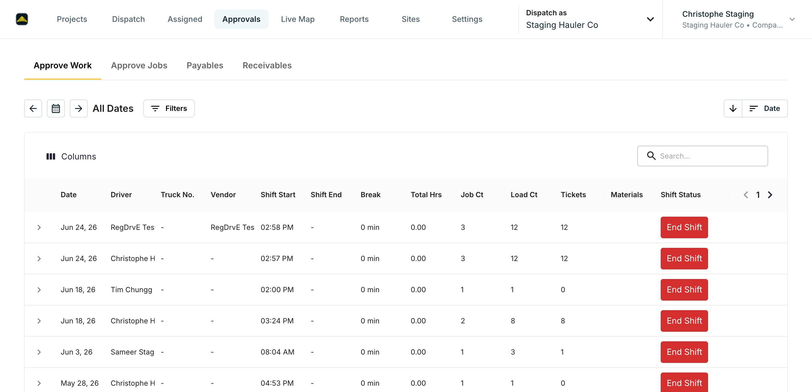
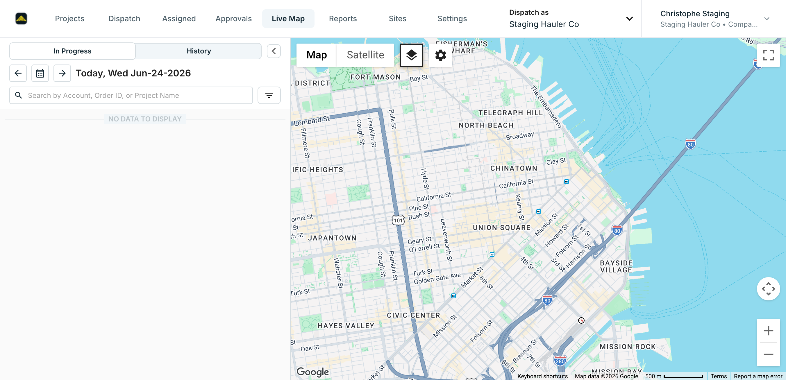

Approvals subtabs (flag projection, not new code): the subtab set is entirely Split-flag + permission gated in Approvals.tsx. This run showed Approve Work / Approve Jobs / Payables / Receivables — i.e. the approve_jobs_tab_enabled flag is on for this tenant (with canApproveJob), and "Tickets Review" is hidden via hideOriginalTicketReviewTab. The "Approve Jobs" tab reflects flag/permission state for Staging Hauler Co rather than a deploy since Jun-18.


Created projects from the Projects tab across five customer/name variations, plus an empty-submit negative test (NEG-01) and a special-character edge case (NEG-02). Sequential PROJ-##### IDs confirmed (15533 → 15537); all five render in the Projects list with correct name / customer / date / requestor.
| # | Project ID | Name | Customer | Result |
|---|---|---|---|---|
| V1 | PROJ-15533 | Reg Jun24 - Material Delivery | Planet Express 1 | Pass |
| V2 | PROJ-15534 | Reg Jun24 V2 - Running Haul | Acme Construction | Pass |
| V3 | PROJ-15535 | Reg Jun24 V3 - Flat Rate | City Job | Pass |
| V4 | PROJ-15536 | Reg Jun24 V4 - Aggregate Haul | Bulk Test 1 | Pass |
| V5 | PROJ-15537 | Reg Jun24 V5 <b>&'"é🚚 edge | Planet Express 1 | Pass |
| NEG | — | (empty form) | — | Pass |
Full New Order dialog renders (all sections); Company pre-set; Create disabled until required fields satisfied. Five orders created across different customers, times, and optional fields. Each create verified to its 'ORD-#####' created successfully toast; the dispatch board "Unassigned" counter advanced accordingly.
| # | Order ID | Customer | Start | Variation | Result |
|---|---|---|---|---|---|
| V1 | ORD-29914 | Planet Express 1 | 9:00 AM | baseline | Pass |
| V2 | ORD-29915 | Acme Construction | 10:00 AM | diff customer | Pass |
| V3 | ORD-29917 | City Job | 11:00 AM | External ID (dup probe → NEG-04) | Pass |
| V4 | ORD-29918 | Bulk Test 1 | 12:00 PM | — | Pass |
| V5 | ORD-29919 | Planet Express 1 | 1:00 PM | — | Pass |
See NEG-04 for the External-ID uniqueness rejection encountered on V3. The Jun-18 masked-date flakiness (FIND-02) did not reproduce.
Order context menu (Text All Drivers, Duplicate Order, Copy and Edit, Cancel Order) confirmed. Duplicate dialog (date, truck quantity, "Copy job assignments" checked) → ORD-29920 created from ORD-29919; board Unassigned advanced 6 → 7.
Cancelled the duplicate ORD-29920 via the order "···" menu → Cancel Order → confirmation dialog ("Are you sure you want to cancel the selected order?") → Confirm. Status moved to Canceled (board Canceled counter +1).
Opened the edit (pencil) on ORD-29919 → "Update Order" dialog (pre-populated; Submit disabled until a change). Set Order Notes to "Edited during regression test Jun 24 2026" → Submit → "'ORD-29919' updated successfully" toast. The new note is visible on the order card afterward.
Ran Simulate Order three times via the new config dialog (see FIND-03). Each returned the "Simulating order. This will take a few seconds to complete." toast, and the dispatch status counters advanced through the lifecycle — by the third run the board showed Accepted 3/12, En Route 1, Loaded 1, Completed 3, confirming the simulated orders ran to completion.
Entered "I need 2 trucks to deliver gravel tomorrow at 9am" → Generate. AI correctly extracted into the Order Preview: date 06/25/2026 (tomorrow), time 09:00 AM, trucks 2, material "gravel" (flagged "Please confirm value"). Closed via Cancel without creating — non-mutating verification.
Expanded PROJ-15537 on the Projects tab → timeline panel renders the "Project created" event with a "Hide timeline" toggle. The project list shows correct name / customer (Planet Express 1) / created date (Jun-24-2026) / requestor (Christophe Staging) for all five created projects.
Created five users with different roles via Settings → Users → Create User (using "Don't send an invite" so no email is dispatched). Each appears in the user grid with a success toast. The invite-type selector (Email / SMS / Don't send) renders as expected.
| # | Name | Role | Result | |
|---|---|---|---|---|
| V1 | Reg24A TestUser1 | christophe+rega24@ | Dispatcher | Pass |
| V2 | Reg24B TestUser2 | christophe+regb24@ | Foreman | Pass |
| V3 | Reg24C TestUser3 | christophe+regc24@ | Biller | Pass |
| V4 | Reg24D TestUser4 | christophe+regd24@ | Viewer | Pass |
| V5 | Reg24E TestUser5 | christophe+rege24@ | Reporting | Pass |
| ERR | Reg24Dup DupProbe | christophe+rega24@ | Dispatcher | Pass (rejected) |
Two uniqueness guards confirmed: full-name uniqueness (NEG-05) and email uniqueness (NEG-03, "Email has already been taken").
Created five drivers via Settings → Drivers → Create Driver (First/Last/Email; "Provide at least one contact method" enforced). Each driver auto-provisions a matching truck — verified "RegDrv24A TestDriver1's Truck • RegDrv24A TestDriver1" in the dispatch driver panel — matching the Jun-18 T-P18 behaviour.
| # | Driver | Auto-truck | Result | |
|---|---|---|---|---|
| V1 | RegDrv24A TestDriver1 | christophe+regdrva24@ | ✔ | Pass |
| V2 | RegDrv24B TestDriver2 | christophe+regdrvb24@ | ✔ | Pass |
| V3 | RegDrv24C TestDriver3 | christophe+regdrvc24@ | ✔ | Pass |
| V4 | RegDrv24D TestDriver4 | christophe+regdrvd24@ | ✔ | Pass |
| V5 | RegDrv24E TestDriver5 | christophe+regdrve24@ | ✔ | Pass |
T-P11: Approvals loads at /approvals/driver-day with subtabs Approve Work / Approve Jobs / Payables / Receivables and a date-range filter (label drift noted in FIND-01). T-P14: Live Map loads at /live with Google tiles (.gm-style) and layer/zoom controls; the legacy /live-map deep-link still 404s. Read-only verifications — not data-variation tests.
| Group | Test | Variations run | Progress (of 5) | Status |
|---|---|---|---|---|
| T-P01 | Create Project | 5 + 2 neg/edge | Complete | |
| T-P02 | Create Order | 5 + 1 neg | Complete | |
| T-P03 | Duplicate / Copy Order | 1 | Partial | |
| T-P04 | Cancel Order | 1 | Partial | |
| T-P05 | Edit Order | 1 | Partial | |
| T-P06 | Assign Driver to Job | 0 | Auth-gated | |
| T-P07 | Send Job to Driver | 0 | Auth-gated | |
| T-P08 | Simulate Order | 3 | Partial | |
| T-P09 | Quick Order (AI NLP) | 1 | Verified | |
| T-P10 | Project Details | 1 (timeline) | Verified | |
| T-P11 | Approvals (layout) | 1 (read-only) | Verified | |
| T-P12 | Single Job Approval | 0 * | Auth-gated | |
| T-P13 | Bulk Job Approval | 0 * | Auth-gated | |
| T-P14 | Live Map (load) | 1 (read-only) | Verified | |
| T-P15 | Send All Jobs | 0 | Auth-gated | |
| T-P16 | Bulk Dispatch Operations | 0 | Auth-gated | |
| T-P17 | User Management | 5 + 2 err probes | Complete | |
| T-P18 | Drivers | 5 | Complete | |
| T-M01–08 | Mobile (driver app) | — | Needs device |
* T-P12/T-P13 deliberately not triggered to avoid approving (mutating) other testers' staging jobs.
PROJ-15533 … PROJ-15537 — five regression projects (T-P01 V1–V5).
ORD-29914, 29915, 29917, 29918, 29919 — five orders (T-P02); ORD-29920 duplicate, then canceled (T-P03 / T-P04).
3 simulated orders (T-P08, ran to Completed). 5 users Reg24A–E TestUser1–5 (T-P17, no invites sent). 5 drivers RegDrv24A–E TestDriver1–5 + auto-trucks (T-P18).
All isolated to Staging Hauler Co; no production impact, no outbound notifications to third parties.
Tool: Chrome DevTools driven by Claude Code via the accessibility tree (snapshot → grep uid → click/fill). All actions through the UI; mutations cross-checked against the network log (POST/PATCH/PUT status codes) and the resulting list/board/counter state. No direct API writes.
What ran: the same 12 platform groups exercised in the Jun-18 run were re-executed here — T-P01 and T-P02 to full 5× depth, T-P17 / T-P18 to 5× (authorised), plus single-pass verification of Duplicate / Cancel / Edit / Simulate / Quick Order / Project timeline / Approvals / Live Map. Four negative guards (empty-form, special-char, duplicate email, duplicate External ID) and two uniqueness validations were confirmed. 0 functional failures.
Recommended path to full 5× coverage: the Playwright e2e suite (yarn e2e:test) remains the right vehicle for breadth across all 18 groups headlessly; this manual run is the interim substitute and the deliberate auth-gated groups (outbound to real drivers, shared-job approvals) are best covered there against isolated fixtures.